10. Input devices
Add an output device to a microcontroller board you've designed and program it to do something
For this week i watched the reference of touchpad website on Fab Academy schedule page.
Trying very similar and my intention is to make some kind of touchpad.
Comparing pinouts
[Neil’s step response]PB5 PB3 (shield/step/charge pin) PB4 (sense pin) GND VCC PB2 : receive pin rx PB1 PB0 |
[Yongwoo’s trial]PB5 : PCINT5/reset/dw PB3 (shield/step/charge pin) PB4 (sense pin) GND VCC PB2 : receive pin rx PB1 PB0 |
[RXTX]Attiny 45IS x 1 3X2 Pin Header (ARVISP SMD) x 1 2X2 Pin Header SMD x 1 FTDI Header SMD x 1 10k Ohm resistor RES-US1206fab x 1 1m Ohm resistor RES-US1206fab x 2 Capacitor 1 uf x 1 [RXTX PAD = My Touchpad]2X2 Pin Header SMD x 1 |
I’ve finally redesigned my board and made additionally the touchpad that connects RX, TX. Basically my intention is to create a connection between touchpad and input so later on with redesigned touchpad with arrow cursors it can be used for final project of my thing.
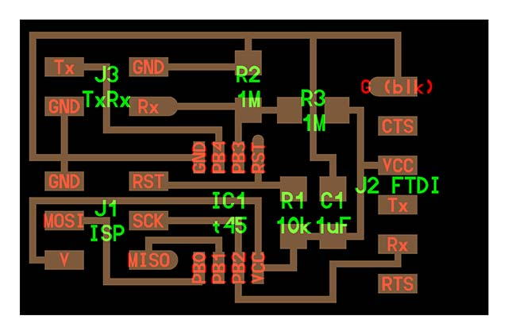 |
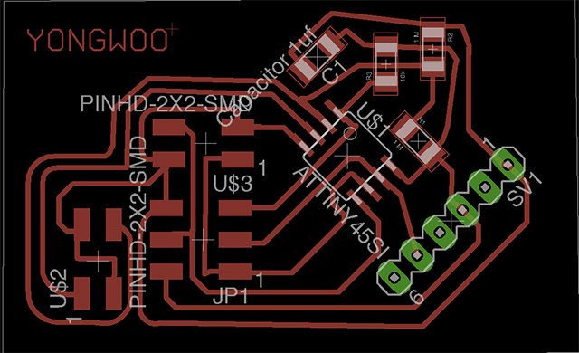 |
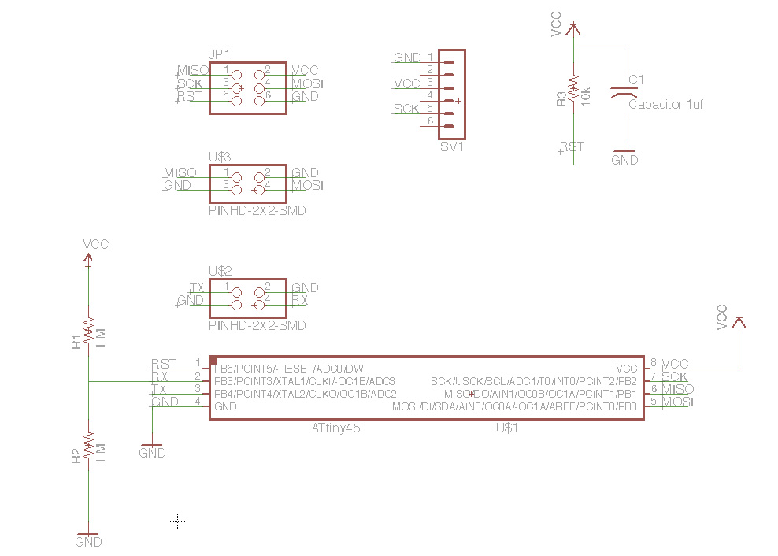 |
Step.response (Neil’s) |
Input re-designed |
Re-designed schematic |
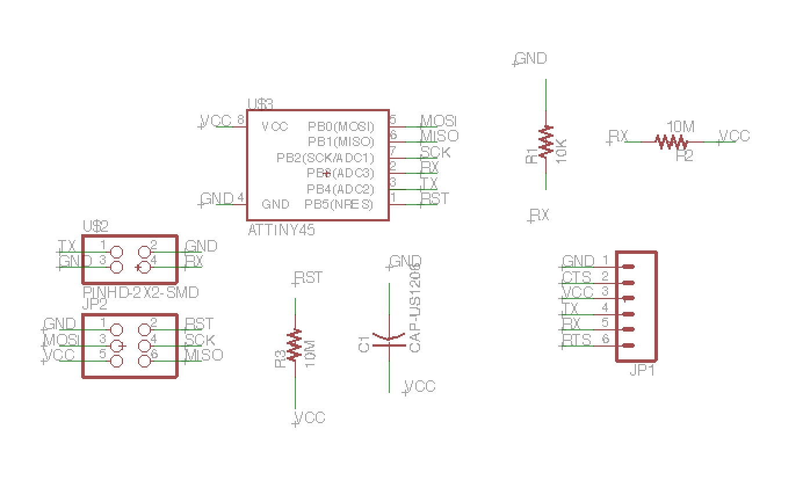 |
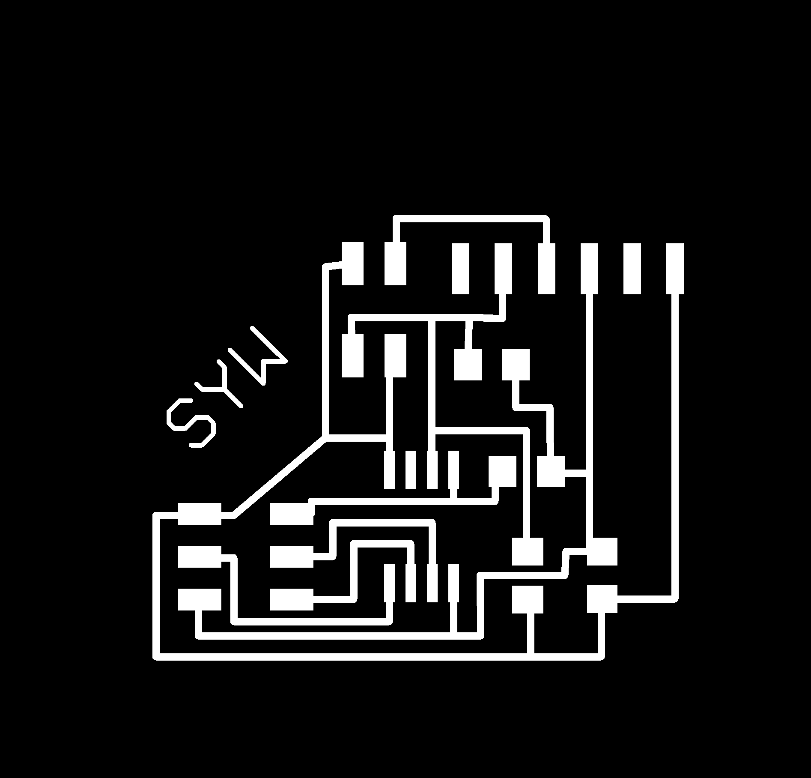 |
INPUT.STEP RESPONSE(re-design) |
INPUT.STEP RESPONSE(re-design) |
Terminal command (Mac OS X)
Setting up PySerial (Macintosh)
-
move to the directory and install pyserial
-
sudo python setup.py install // directory must be moved to where setup.py is placed
Programming : sudo make -f hello.mic.45.make program-usbtiny
Checking USB Port : ls /dev/tty.usb* (for example : “dev/tty.usbserial-FTF53NJC”)
For visualization : python (hello.mic.45.py : filename) /dev/tty.usbserial-FTF3NJC
TESTING PCB
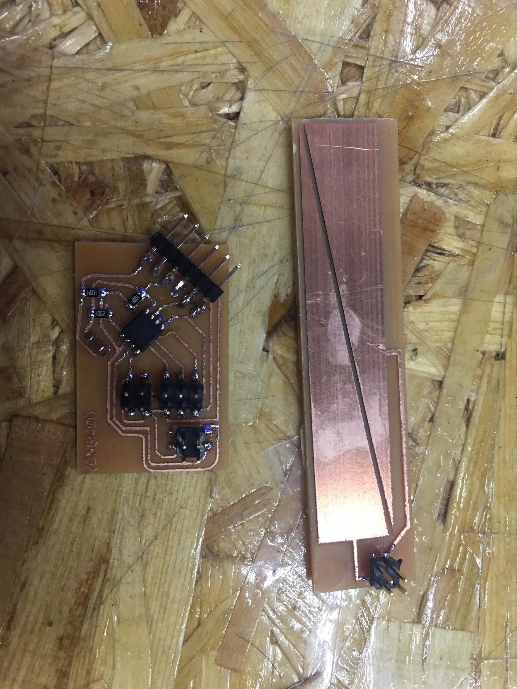 |
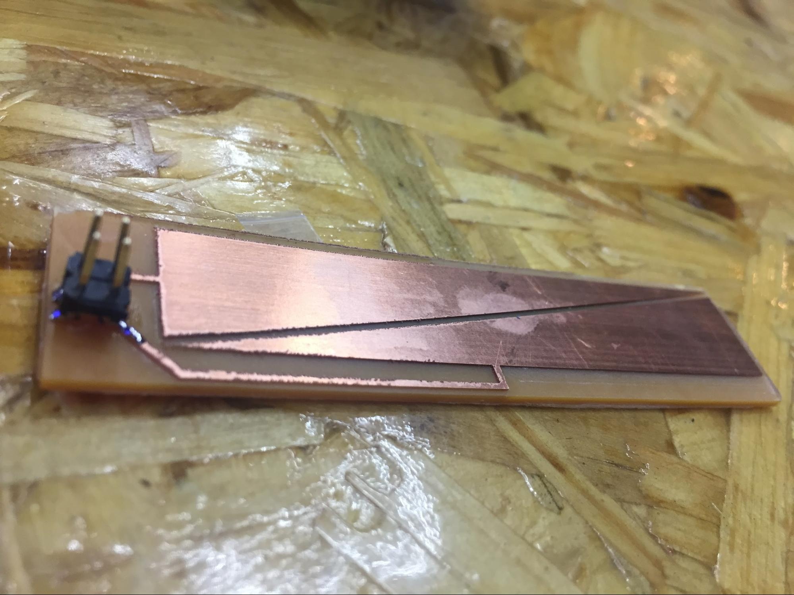 |
Board ( input & touchpad) |
Touchpad - closer view |
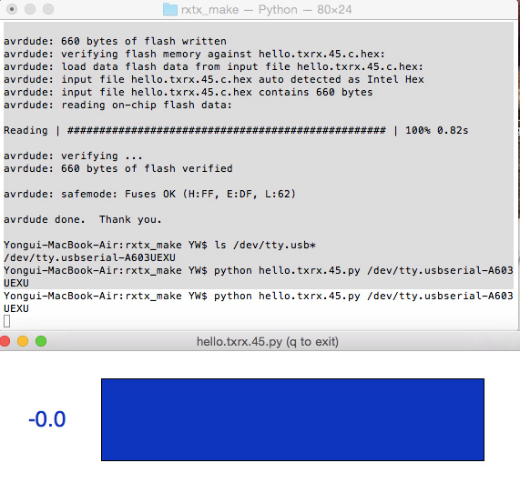 |
||
TXRX - not working |
VIDEO : TXRX GOING UNSTABLE |
VIDEO : CHECKING STEP RESPONSE |
No matter how many times I’ve tried the bar graph didn’t make any positive change and after several try I’ve only noticed peak change ( around one digit) which was just useless.
I’ve noticed my board is not in perfect shape as and the TXRX also so therefore I’ve quickly milled Neil’s board to check if my board is the main cause of the situation.
However, the interaction of txrx touchpad wasn’t stable therefore the number was unpredictable. Which wasn’t good for controlling any output devices. I think my board is unstable in comparison between other guys. What I was thinking about was gradually getting increased values. Therefore I’m looking at again at my board and with bumpy lines and stains that may affect the copper I’ll try with the new txrx board design that is not touchpad and looks like pin-shaped humidity sensor.
This time was showing progress as I got to see changing in values but as I have concerned It’s making digit that is not steady. Normally I’ve seen changing values of starting point at ZERO and as the copper area is increased the value on the screen goes up to 4 digits.
----After processing assignment ---
As I was having problem with input device which the number is very unstable I decided to make it more stable. The problem with the first txrx board was that I wasn’t able to get gradient in number(what I mean is number gradually arise with my movement)
Therefore, I had to find very simple copper tape made txrx board to test that the number stays according the input. I quickly made female wired headers to connect copper tape.
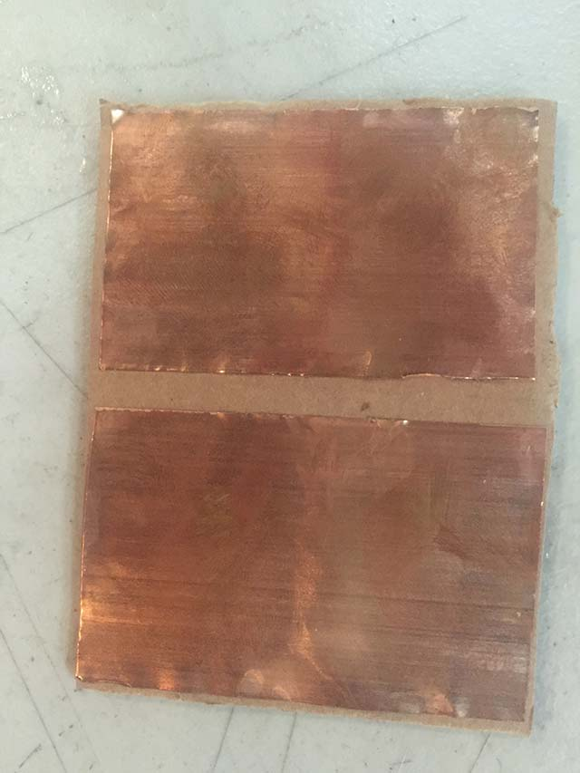 |
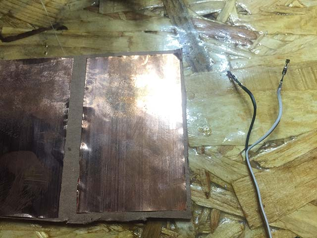 |
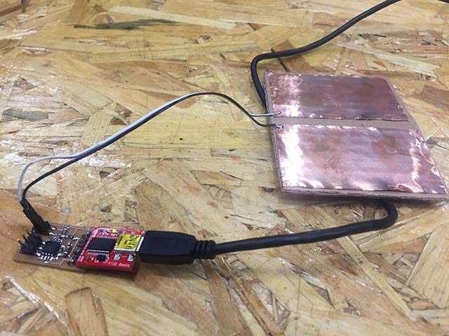 |
copper tape on CARDBOARD |
copper-taper wire |
step.response with txrx |
Humidity Sensor
I just need a 2X1 SMD pin-out component and outer design. I looked closely at humidity sensor module and therefore, I’m going to use DIY sensor. for the TXRX I get the idea of when the copper is saturated with water it suppose to change value.
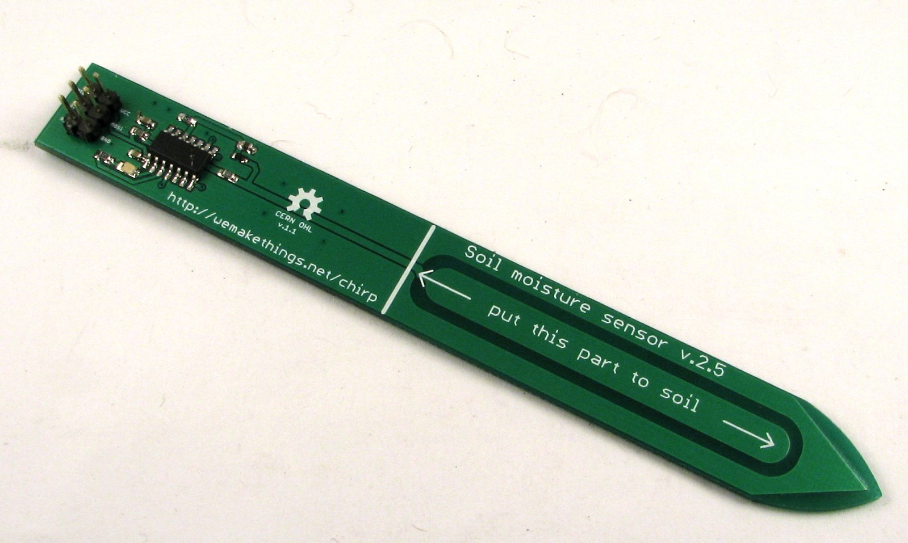 |
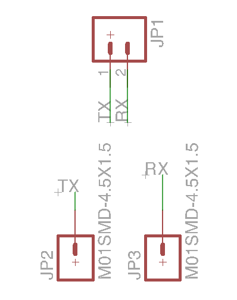 |
commercial humidity sensor |
Schematic of humi.sch |
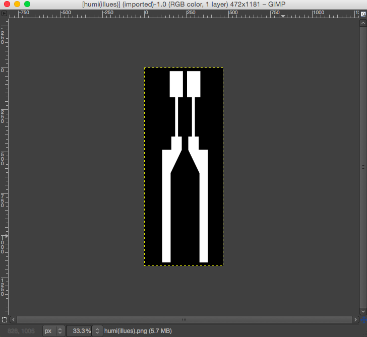 |
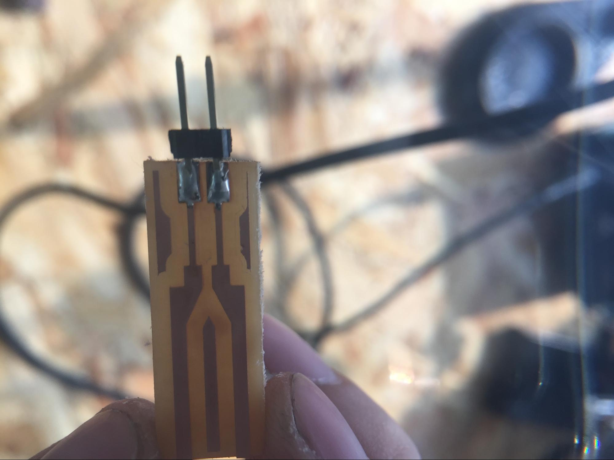 |
image trace done in gimp |
humi board milled with SRM-20 |
--- VIDEO of HUMIDITY SENSOR WORKING --- |
What i did …
Photo shown above is for making humidity sensors. I recognized 6 pin headers, 1xLED, capacitors and several resistors with microprocessors. Basically my redesigned board will be digital fabricated design of humidity sensor with recycle materials or just the copper board.
As shown above the commercial product has micro controller but as my board is designed and I only need to wire the TXRX (my own pcb Board). That’s why I simply used eagle to make surface mount of 2 pin (I had to use eagle to export image as in PCB size)
I’ve created image and extended canvas size the size that I want for the SRM-20 to mill the board. With the white traces that I want to make it as a reactive part for humidity I’ve used illustrator to create traces and re-edit on GIMP for making outlines.
What i learned …
I haven't got a chance with diffrent programming language however I had enought of trial in making a board with different design, checking the traces and approving at which state the traces are cut in clear status. By the looks of it, design rule check is very important at firs, and condition of end-mill must be in good-shape with certain maintenance. With double-sided tape to hold the copperboard, the end-mill can be affected by the adhesive material and it must be cleaned everytime for the next user
Sometimes the end-mill just skate above the copper board which means it just make a glimpse of a trace and not cutting thoroughly. When it happens it was wise to just pause the CNC machine and start with a new z-axis. And when doing the NEW toolpath be sure to give some force to the copper with a hand